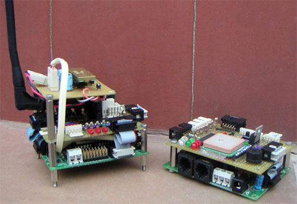

{kind=link}
Leo en el Blog de Mif que ha finalizado el diseño de su robot TupperBot 2.0. La primera versión ganó el concurso de prueba libre en MadridBot 2007. Yo estuve allí y lo pude ver en directo 😉 (Resumen del evento).
Me encanta el diseñoo de TupperBot 2.0. Es muy sencillo. Y que sea sencillo no significa que haya sido fácil. Todo lo contrario. Hacer que las cosas sean sencillas es muy complicado. Lo fácil es hacerlo difícil 😉
Como eletrónica está utilizando “las dos torres” (no sé si se habrá inspirado en el señor de los anillos :-D):

{kind=link}
La pequeña se encarga de centralizar toda la información proveniente de los sensores: CNY70, GPS, pulsadores y además el altavoz.
La alta es la de control e incluye las comunicaciones, motores, LCD y foco RGB.
En la base de ambas torres está situada la tarjeta Skypic, que es hardware libre y está basada en el microprocesador PIC16F876A de Microchip. La comunicación se realiza a través del bus I2C.
Hay más información en esta entrada de su blog: TupperBot 2.0
Enhorabuena Mif, y muchas gracias por compartir tu trabajo 🙂